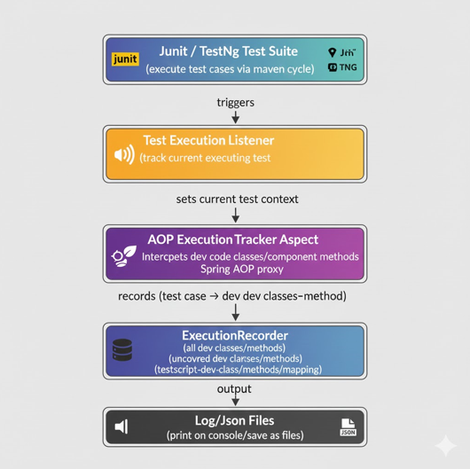

Summary
Modern software development increasingly requires deep insights into how automated tests interact with the underlying implementation. Traditional coverage tools (JaCoCo, Clover) provide line or branch coverage but lack semantic mapping between which test script execution invoked development code method in the application.
This project introduces a framework-agnostic, aspect-oriented instrumentation solution for Java based applications that:
• Intercepts runtime execution of application methods
• Identifies the test method responsible for each execution.
• Produces a machine-readable JSON report mapping test cases → invoked dev methods.
• Eliminates the complexity and unreliability of JVM java agent-based weaving by using Spring AOP for broad compatibility.
The resulting system provides a new level of observability for quality engineering teams, enabling automated traceability, impact analysis, regression minimization, and requirements verification.
Problem Statement
Organizations often face the following challenges in quality engineering.
1. Unknown test impact
It is difficult to reliably determine which test cases exercise which code paths.
2. Over-testing and redundant execution
Without mapping, CI systems often re-run large test suites unnecessarily.
3. Poor traceability to requirements
Engineers struggles to verify that specific requirements are covered by specific tests.
4. Existing tools are inadequate
Tools like JaCoCo show coverage percentages but no test → dev code methods mapping.
Overview
The system consists of four major components:
-
Aspect-Oriented Execution Tracker
• Fully qualified method signature
• Timestamp (optional)
• Thread context
• Test name associated with current call
-
Test Execution Listener for Precise Test Context
• beforeTestMethod () → set current test name in Thread Local
• afterTestMethod () → clear the context.
This eliminates stack-trace heuristics and provides perfect attribution of executions to tests.
-
Execution Recorder
• Receives method execution events
• Stores mappings in Map
• Writes results to target/ {filename}.json
-
JSON Output
{ "com.example.calculator.CalculatorServiceTest.testDivision" : [ "CalculatorService.divide(..)" ], "com.example.calculator.CalculatorServiceTest.testAddition" : [ "CalculatorService.add(..)" ] }This format is ideal for downstream use in:
• Test impact analysis.
• Traceability dashboards.
• Change-based test selection.
• Regulatory documentation
System Architecture
Use Cases
-
Test Impact Analysis (TIA)
Identify the smallest set of tests to run after code changes:
• Compare changed classes.
• Find tests that map to those classes.
• Execute only impacted tests. -
Regulatory Traceability
• Link requirement → test → code automatically:
• Requirement mappings to tests to methods.
• Produces end-to-end traceability reports. -
CI Pipeline Optimization
Save 70–90% test execution time by skipping unaffected tests -
Test Gaps / Missing Coverage
If a method is not listed in output:
• No current tests exercise it.
• Teams can automatically generate missing tests.
Future Enhancements
-
Graph QL / REST Mapping
Add correlation from HTTP requests → test → method execution. -
Neo4j Graph Visualization
Store execution graphs for visualization: Test Node → Method Node relationships. -
AI-assisted Test Impact Prediction
Use historical JSON mappings with embeddings (pgvector) to:
• Predict impacted tests from natural-language description of changes.
• Auto-suggest missing tests.
Conclusion
This solution provides a robust, stable, agent-free, and future-proof approach to mapping automated tests to executed development methods. By leveraging Spring AOP and Test Execution Listener mechanisms, it avoids JVM compatibility problems and delivers precise execution mappings ideal for modern QA, DevOps, and compliance workflows.
Its JSON-based output integrates seamlessly into CI/CD pipelines and analytics systems.
This is a foundational building block for:
• AI-driven test generation
• Smart regression selection
• End-to-end requirements traceability
• Automated impact analysis pipelines